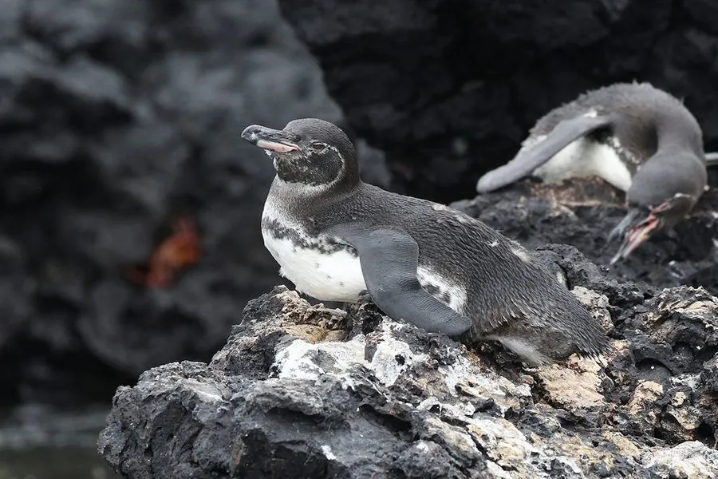

鸟类 · 动物界
加拉帕戈斯企鹅 Spheniscus mendiculus

唯一在赤道附近繁殖的企鹅，体型小巧，靠秘鲁寒流在加拉帕戈斯群岛生存，眼周裸露皮肤呈粉色，种群受暖事件严重冲击。
- 分类
- 门脊索动物门纲鸟纲目企鹅目科企鹅科属环企鹅属
- 栖息环境
- 加拉帕戈斯群岛的火山岩海岸、熔岩缝隙与近岸冷水海域
- 地理分布
- 厄瓜多尔加拉帕戈斯群岛，主要见于伊莎贝拉岛与费尔南迪纳岛
- 保护级别
- IUCN 濒危（EN）；CITES 附录Ⅰ
物种志
加拉帕戈斯企鹅是体型最小的企鹅之一，体高约 45–50 厘米，体重 1.7–2.5 千克。头部黑色，眼周有一圈裸露的粉红色皮肤，向下延伸至喙基，胸前有两条黑色纵纹，腹部白色，鳍状肢内侧浅色。喙细长而尖，适于捕捉小鱼。它的羽毛较薄，需要在陆地上长时间晒太阳取暖，也常在水中快速散热。
它们仅分布于厄瓜多尔加拉帕戈斯群岛，是唯一在赤道附近繁殖的企鹅，依靠秘鲁寒流带来的冷水与鱼群生存，主要捕食沙丁鱼、鲱鱼和小型头足类。繁殖期不固定，食物充足时一年可繁殖两次，每窝产两枚卵，由双亲轮流孵化和育雏。它们会在火山岩缝隙、熔岩隧道中筑巢，以躲避正午烈日与捕食者。厄尔尼诺暖事件会令鱼群消失，造成大量个体饿死，种群可能骤减过半。目前全球成鸟数量仅约一千余只。
形态与习性
- 体高约 45–50 cm，体重 1.7–2.5 kg
- 食性沙丁鱼、鲱鱼等小型鱼类及小型头足类
- 繁殖食物充足时一年可繁殖两次，每窝两枚卵
- 孵卵双亲轮流孵化约 38–40 天
- 分布局限全球仅在加拉帕戈斯群岛繁殖，九成以上个体集中在两座岛
- 种群现状成鸟约 1000–1500 只，暖事件后可骤减一半以上
- 寿命约 15–20 年
趣味知识
- 它是唯一在赤道附近繁殖的企鹅，靠寒流而不是冰原生活。
- 眼周裸露的粉色皮肤是它散热的窗口，热时会更显红。
- 强厄尔尼诺年份鱼群消失，可能导致过半成鸟饿死。